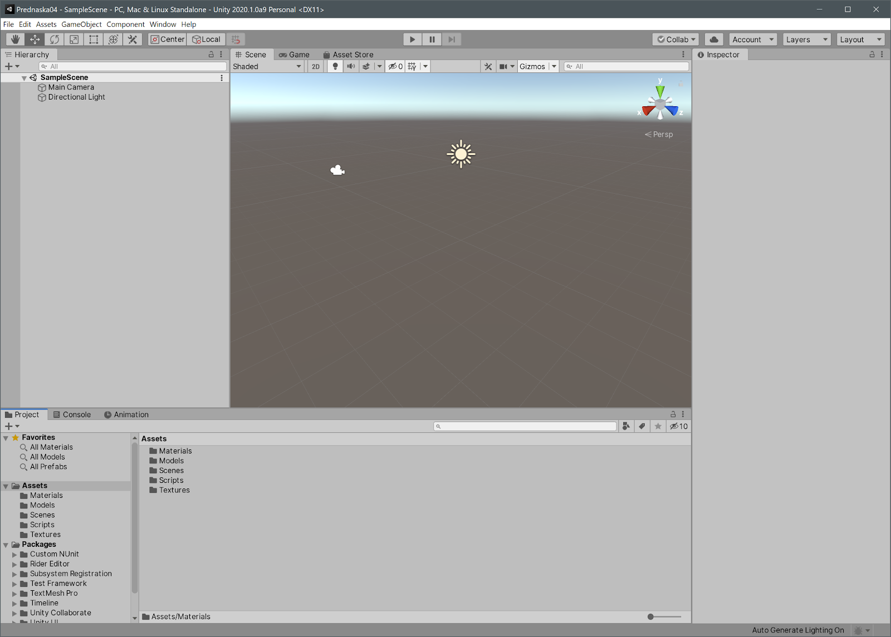
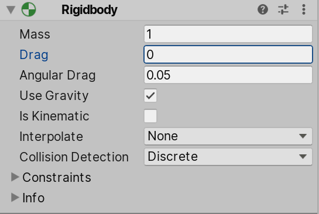
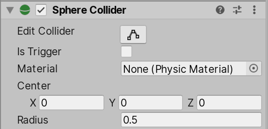
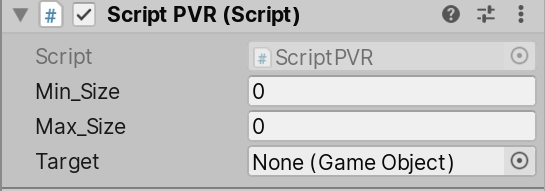
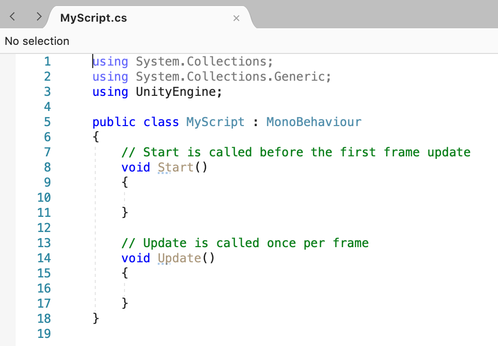
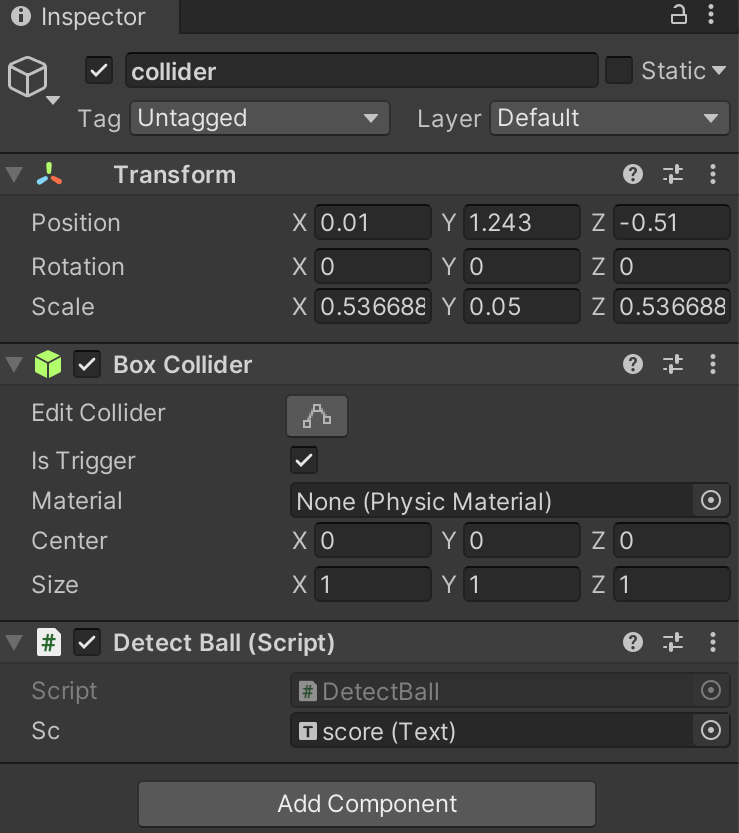
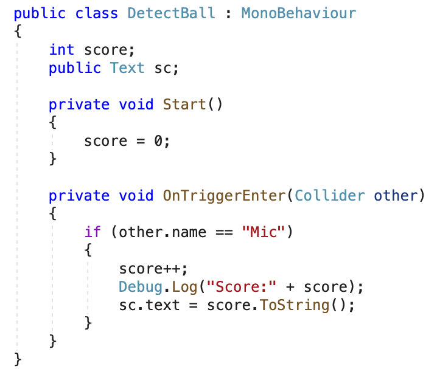
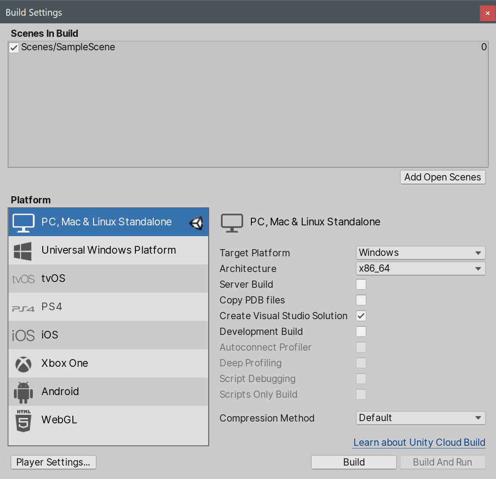

Unity je multi-platformní herní engine vyvinutý společností Unity Technologies (2005).
Dnes se používá daleko za hranicemi her: pro vizualizaci dat, simulace, výuku,
architekturu, film a VR/AR.
Editor
Vizuální WYSIWYG prostředí
Scéna, hierarchie, inspector
Windows, macOS, Linux
Engine
Renderovací pipeline
Fyzika (NVIDIA PhysX)
Zvuk, animace, UI
Skriptování
C# (.NET / Mono)
Velká komunita a dokumentace
Asset Store s hotovými řešeními
Základní pojmy
Scéna (Scene)
Hry (projekty) jsou rozděleny na scény.
Struktura pro hierarchický popis scény.
Obsahuje GameObjecty.
Scén může být více.
Lze je přepínat pomocí skriptu.
Typické dělení scén
Menu / úvodní obrazovka
Vlastní obsah: hlavní scéna
Načítáním (loading) mezi scénami
Oddělené úrovně nebo sekce
Pozor: samostatná scéna je vhodná i pro optimalizaci výkonu:
méně objektů v jedné scéně = rychlejší běh.
Přepínání scén
using UnityEngine.SceneManagement;
// ... načtení scény podle názvu
SceneManager.LoadScene("Vizualizace");
Základní pojmy
GameObject
Základní prvek ve scéně. Sám o sobě „nic neumí“: veškerou funkcionalitu
dostává až komponentami.
Příklady
Viditelné objekty ve scéně (2D, 3D)
Kamera
Světlo
Částicové systémy (particle systems)
Zvuk
Skybox
Vlastnosti
Vždy má komponentu Transform(pozice, rotace, měřítko)
Lze přidávat neomezeně komponent
Má jméno, tag a layer
Může být aktivní / neaktivní
Může mít potomky (parent–child hierarchie)
Hierarchie je klíčová:
transformace rodiče se propaguje na všechny potomky: typicky se takto
skládají různé objekty v hierarchii.
Základní pojmy
Komponenty (Components): Entity Component System (ECS)
Přidávají další vlastnosti pro GameObject.
Skládáním jednoduchých komponent vzniká složité
chování.
RigidBody: tuhé těleso, fyzikální vlastnosti tělesa
Physics Material: fyzikální vlastnosti materiálu
pružnost, tření, disipace energie při srážce…
Chování
Script v C#
Animator: animace
Audio Source: zvuk
Camera / Light
Spousta dalších…
Filozofie Unity: žádná hluboká dědičnost tříd, ale
kompozice: GameObject je „kontejner“ a komponenty jsou zásuvné moduly.
Základní pojmy
Assets
Veškerá binární a textová data potřebná pro projekt.
Co patří mezi assety
Bitmapové textury
3D modely
Zvuky, Video
Skripty
Fonty
Animace
V projektu
Ve složce Assets
Složka je zrcadlena do Unity
Unity vytváří .meta soubory s importními nastaveními
Ty je nutné verzovat spolu s projektem
Pozor na verzování
: složky Library/, Temp/ a obj/ se nikdy
necommitují (jsou to přegenerované cache). Verzuje se Assets/,
ProjectSettings/ a Packages/.
Základní pojmy
Prefabs
Předpřipravené šablony prvků ve scéně.
Prefab může být jeden nebo více GameObjectů v nějaké hierarchii
Mají již nastavené společné vlastnosti:
komponenty
skripty
textury…
Můžeme vytvořit novou instanci v editoru nebo pomocí skriptu
Lze následně měnit vlastnosti pro novou instanci nebo hromadně pro všechny
Proč prefaby
Znovupoužitelnost: jedna definice, mnoho výskytů
Konzistence: změna v prefabu se promítne všude
Výkon: instance sdílejí mesh a materiály
Základ pro generování scény ze skriptu
Varianty: prefab variant umožňuje odvodit upravenou verzi
(např. jiná barva) bez duplikace celé definice.
Základní pojmy
Balíčky (Packages)
Projekty v Unity lze rozdělit na samostatné balíčky.
Balíčky poskytují nějakou funkcionalitu.
Unity 3D samo přidá do projektu základní balíčky:
UI, práce s textem, testovací funkce…
render pipeline, input system, atd.
Z Asset storu lze přidat další:
podpora VR
hotové funkce pro hry (FPS, 3rd person)
modelování terénu
3D text, atd.
Rizika balíčků
Mohou být problémy s kompatibilitou balíčků s Unity
(verze editoru vs. verze balíčku).
Problémy se závislostmi: „dependency hell“.
Manifest
Seznam balíčků se drží v Packages/manifest.json: je to textový soubor,
takže je přehledně verzovatelný v gitu.
Editor
Hlavní okno editoru

Inspector: vlastnosti vybraného objektu a jeho
komponent. Kontextové menu objektů: přidávání komponent, duplikace, vytvoření prefabu.
Hierarchy
Hierarchie objektů ve scéně: stromová struktura rodičů a potomků.
Project
Složka assetů: stejná jako na disku. Odtud se vše importuje.
Scene & Game
Okno scény (editace) vs. Game (pohled kamery za běhu).
Editor
Důležité komponenty
Menu > Components
Rigid body
Stará se o fyziku spojenou s objektem
Is Kinematic předá fyziku skriptu

Physics Material
Fyzikální vlastnosti povrchu
tření, pružnost (bounciness)
Collider
Pro detekci kolizí
Definuje „obal“ tělesa

Editor
Komponenta Script
Pro nás velmi důležitá
Kód v C#
Lze psát v jakémkoliv editoru
Ale skvělá podpora MS Visual Studio (Mac, Win)
Lze definovat vlastní atributy viditelné v editoru Unity

Zveřejnění hodnot v Inspectoru
using UnityEngine;
public class Rotator : MonoBehaviour
{
// Veřejné pole = editovatelné v Inspectoru
[Tooltip("Rychlost rotace ve stupních za sekundu")]
public float speed = 30f;
[Range(0f, 1f)]
public float intensity = 0.5f;
// Skryté, ale serializované
[SerializeField] private Color tint = Color.white;
}
[SerializeField]: zpřístupní i privátní pole. [Range]: posuvník. [Tooltip]: nápověda.
Skriptování
Životní cyklus MonoBehaviour 1/2
Důležité metody
Start();
Volá se před prvním updatem objektu
Vhodné pro prvotní nastavení objektu
Update();
Volá se každý frame
Vhodné pro zpracování vstupu uživatele a všeho,
co je závislé na čase
Při použití nového systému vstupu se to dělá přes
Listenery a callbacky

Pozor: pořadí Awake mezi objekty
není garantované. Pokud potřebujete vazby mezi objekty, řešte je v
Start(), nikoliv v Awake().
Skriptování
Životní cyklus MonoBehaviour 2/2
Awake();
Volá se jen jednou pro každý skript
Vhodné pro nastavení vazeb mezi objekty při startu aplikace
Fyzika musí běžet v pevném časovém kroku, aby byla simulace
deterministická a nezávislá na výkonu počítače. Když je frame dlouhý,
Unity zavolá FixedUpdate vícekrát za sebou.
Tip: v Inspectoru se zobrazují Eulery, ale interně se vždy počítá
s quaterniony.
Fyzika
Kolize (Colliders)
Různé typy colliderů: BoxCollider, SphereCollider,
CapsuleCollider, MeshCollider.
Detekují kolize a ovlivňují fyzikální chování
(odrazy, tření, pružnost), pokud mají komponentu Rigidbody.
IsTrigger: při kolizi zavolá kolizní funkci
OnTriggerEnter (nedojde k fyzické odezvě).


Kolizní funkce
// Kolize objektů s Rigidbody
void OnCollisionEnter(Collision c) { }
void OnTriggerEnter(Collider other) { }
// Kontaktní body a síly:
Vector3 p = c.GetContact(0).point;
Matice kolizí:
Unity počítá kolize podle Layer Collision Matrix. Vypnutím zbytečných
kombinací výrazně ušetříte výpočetní čas: u rozsáhlých vizualizací je to nutnost.
Data
Import assetů
Způsoby importu
Kompatibilní formáty lze přidat rovnou
Pomocí menu Assets > Import
Pomocí Drag&Drop do okna assetů
Přímé kopírování do složky Assets v projektu
Podporované formáty
Obrázky: jpg, png, tiff, …
3D modely
základní: OBJ, FBX
proprietární: Maya, Blender, 3DSMax, SketchUp
Fonty
Zvuk, video, animace
Užitečné formáty pro data
PLY
point cloud
OBJ
mesh
FBX
animace
Vlastní formáty: načtení přes C# (JSON, binárka)
Velká data se obvykle nenačítají jako asset, ale generují se
skriptem za běhu.
Data
Asset store
Další možnost přidání assetů a balíčků
Placené i free assety
skripty, textury, modely, balíčky
Budeme využívat např. pro instalaci:
Player controller
Text
Unity XR
Vše lze přidat i bez storu manuálně.
Lze tam své assety i publikovat.
Než něco koupíte
Zkontrolujte datum poslední aktualizace: opuštěné balíčky
často nefungují s novým Unity.
Sledujte kompatibilitu s používanou verzí Unity a render pipeline
(Built-in vs. URP vs. HDRP).
U vizualizace se často vyplatí vlastní řešení: máte plnou kontrolu
nad výkonem.
Build
Build projektu
File > Build settings
Výběr cílové platformy
Použijeme PC
Pro iOS, PS4, XBOX je třeba mít příslušné SDK
Build je oproti UE rychlý
Platformy
WindowsmacOSLinuxWebGLAndroidiOSVR (OpenXR)

Poznámka k WebGL: pro vizualizaci na webu je
WebGL nejjednodušší cesta, ale má omezení paměti a výkonu:
velké datasety se do prohlížeče nevejdou.
Unity pro VR
Unity 3D – OpenXR: Action-based systém
Trochu složitější na nastavení, ale přenositelné mezi zařízeními.
XR Origin
Základní kamera a vstup rukou
Nutné přidat skript Input Actions
Teleporting a pohyb
Přímá podpora teleportace
Teleport Point, Teleport Area
Možnost plynulého pohybu pomocí joysticku na ovladači
Interakce s objekty
GrabInteractable
Objekty lze chytat na dálku a následně s nimi manipulovat
Unity pro VR
Unity 3D – OpenXR: Action-based systém
Trochu složitější na nastavení, ale přenositelné mezi zařízeními.
Příklad definice akce ve skriptu
using UnityEngine.InputSystem;
public class GrabAction : MonoBehaviour
{
[SerializeField] private InputActionProperty grabAction;
void OnEnable() { grabAction.action.Enable(); }
void OnDisable() { grabAction.action.Disable(); }
void Update()
{
// Hodnota 0..1 podle stisku spouště
float value = grabAction.action.ReadValue<float>();
}
}
Ukázka
Ukázka v Unity
1. Tvorba jednoduché scény
Nová scéna
Přidání objektů
Světlo a kamera
2. Použití komponent
Mesh + Material
Rigidbody + Collider
Inspector a ladění
3. Jednoduchý skript
Rotace / pohyb objektu
Reakce na vstup
4. XR-Rig
Přidání XR Origin do scény a nastavení vstupů.
5. Interakce
Chytání objektů, teleportace, ověření na headsetu.
VR/AR „out of the box“: OpenXR, XR Interaction Toolkit
Multiplatformní build: PC, web, mobil, headset
Velká komunita a dokumentace
Škáluje od malé ukázky po rozsáhlý projekt
Nevýhody / rizika
Omezení na běžná data: miliony bodů je nutné optimalizovat
Závislost na balíčcích: kompatibilita napříč verzemi
Pro vědeckou vizualizaci chybí algoritmy
(srov. ParaView)
Licence u větších projektů
Nutnost vlastního načítání dat v C#
Pravidlo palce: Unity se hodí tam, kde
je potřeba interaktivní, imerzivní zážitek: VR prohlídky, interaktivní
modely, výuku. Na analytickou vizualizaci velkých dat zůstává
ParaView / VisIt / vlastní OpenGL.